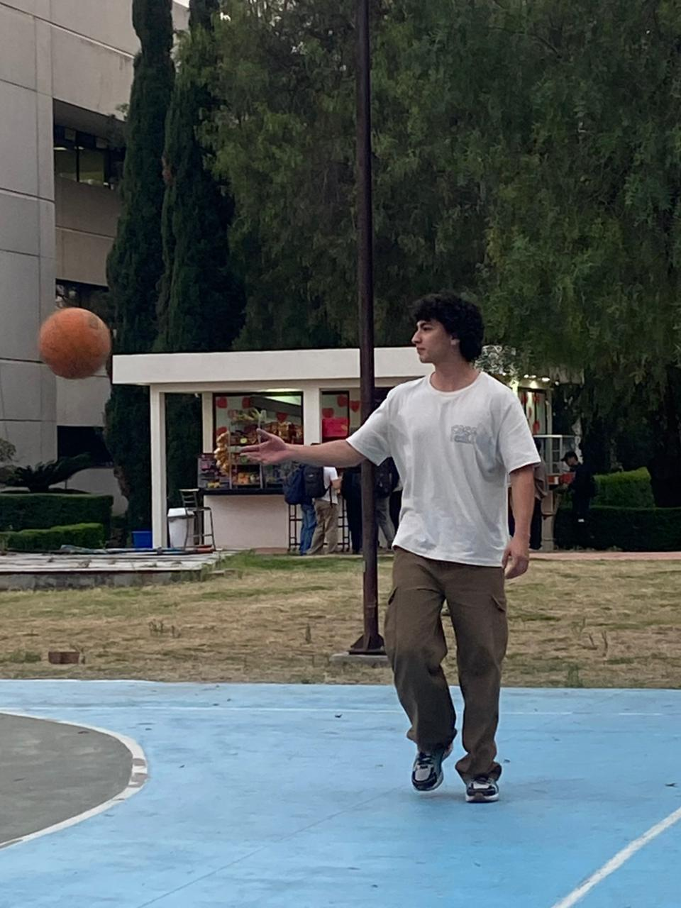
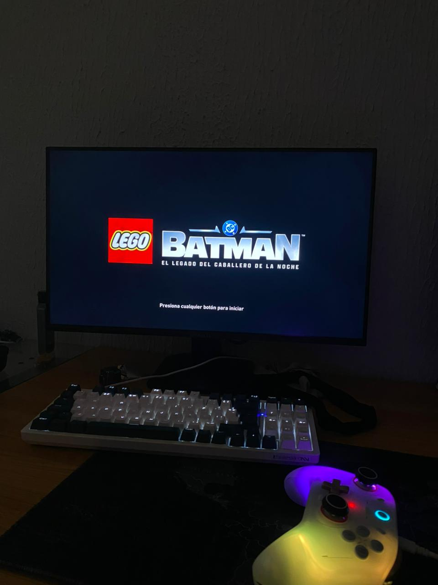
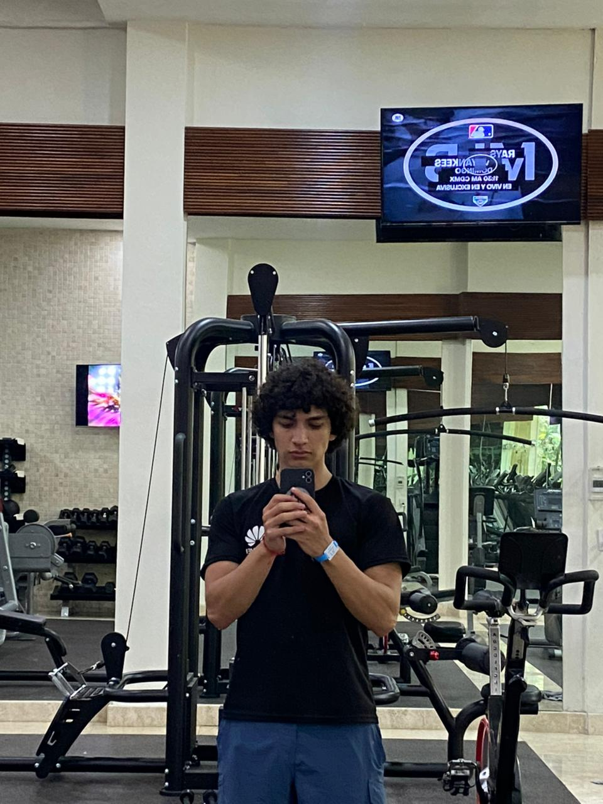

Formación Académica
Ingeniero en Sistemas Computacionales en la Escuela Superior de Cómputo ESCOM
Contacto
Correo electrónico: jperezz1800@alumno.ipn.mx
Redes Sociales
Hobbies

Basketball
Me apasiona jugar basketball. Es una excelente forma de mantenerme activo y desarrollar trabajo en equipo.
⬇️ Descargar Foto{kind=link}

Videojuegos
Los videojuegos son mi forma favorita de relajarme y también de mantener mi mente ágil con desafíos estratégicos.
⬇️ Descargar Foto{kind=link}

Gimnasio
El gimnasio es parte esencial de mi rutina diaria. Me ayuda a mantener disciplina y buena salud física.
⬇️ Descargar Foto{kind=link}
Videos - Hobbies y Actividades Extracurriculares
Video 1
Actividades Deportivas
Video 2
Proyectos Personales
Video - PGP (Pretty Good Privacy)
Video sobre PGP
Introducción a la criptografía con PGP
Acerca de Criptografía
La Historia del Algoritmo RSA
El algoritmo RSA, nombrado por las iniciales de sus inventores Ron Rivest, Adi Shamir y Leonard Adleman, fue presentado públicamente en 1977 y se convirtió en uno de los primeros sistemas de criptografía asimétrica prácticos.
Este revolucionario algoritmo se basa en la dificultad computacional de factorizar números grandes en sus factores primos. La genialidad de RSA radica en su uso de dos claves: una pública para cifrar mensajes y una privada para descifrarlos.
El descubrimiento de RSA marcó un antes y un después en la seguridad de las comunicaciones digitales. Antes de RSA, el intercambio seguro de claves secretas era uno de los mayores desafíos en criptografía. Con RSA, dos personas podían comunicarse de forma segura sin haber compartido previamente una clave secreta.
Hoy en día, RSA sigue siendo ampliamente utilizado en protocolos de seguridad como SSL/TLS, que protegen las comunicaciones en internet, y en sistemas de firma digital. Aunque han surgido nuevos algoritmos como las curvas elípticas (ECDSA), RSA permanece como uno de los pilares fundamentales de la criptografía moderna.
{kind=link}